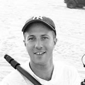

SARA HIRSH BORDO
Founder, Director and Producer
Sara previously held positions in media and entertainment including Executive Director of Interactive Marketing at Paramount Pictures, VP of Digital Marketing at MGM Studios, and CEO and Co-Founder of NowLive which was acquired by Live Media Group in 2013. During her experience in entertainment, she was told by her female boss, that she “belonged more in an apron than in an office.” Recognizing that women have to champion each other rather than allow each other to feel threatened by each other, Sara founded Women Rising, which is dedicated to empowering women and girls through content and experiences. After more than 10 years away in New York, Chicago, and Los Angeles, Sara returned to Austin for the opportunity as the Executive Producer for the first TEDxAustinWomen, which ultimately became the #1 viewed TEDxWomen event in the world across 58 countries. After meeting Lizzie Velasquez during TEDxAustinWomen, Sara and Women Rising secured Lizzie’s rights to tell her story. Sara’s directorial debut, "A Brave Heart: The Lizzie Velasquez Story”, broke Kickstarter records with its fundraising campaign becoming one of the site’s most successful crowdfunded documentaries of all time. Sara then was hired by Conde Nast to produce and direct an original series, Lizzie’s Film, Everyone’s Story, for Glamour.com, and in 2016 returned to live experiences by producing, directing, and programming the R3 Summit for Prevention Magazine (Rodale Inc) and The Circular Summit, in partnership with Entrepreneur and Inc. magazines. Sara is now directing and producing ProtectHer as well as executive producing the animated short documentary Tightly Wound. Sara is a member of the Producer's Guild of America New Media Council, was selected to attend The White House Women Entrepreneurship Conference, The White House Champions for Change Summit, and the final White House’s It’s On Us summit, has been nominated twice for Fortune’s Most Powerful Women Entrepreneur, and has been featured in publications including Inc., Entrepreneur, Forbes, Variety, The Hollywood Reporter, IndieWire, The Mighty, The Washington Post, and The New York Times.

NGOC NGUYEN
Head of Publicity and Partnerships
With over 15 years of experience in the entertainment industry, highlighted by a special focus on feature film publicity and celebrity relations, Ngoc has worked at Paramount Pictures, Creative Artists Agency, Miramax Films, South by Southwest and Austin Film Festival. She has led theatrical and award-winning Oscar campaigns for films such as THE FIGHTER, STAR TREK, MISSION: IMPOSSIBLE–GHOST PROTOCOL, SHUTTER ISLAND, SUPER 8, CLOVERFIELD and RANGO. Ngoc dedicates her work to bridging the gap between entertainment, sports and philanthropy and has consulted for companies such as CBS Sports, Taste of Tennis Australia, Communities in Schools of Los Angeles and ATX TV Festival. Currently, Ngoc serves as Head of Publicity & Partnerships for Women Rising, where she connects global brands to unique opportunities and spearheaded the PR campaign for TEDxAustinWomen, helping to make it the #1 viewed TEDWomen event of 2013 in 58 countries. She is also an Associate Producer on A Brave Heart: The Lizzie Velasquez Story.

LISA HALE
Producer
Since beginning her career back in 2004, Lisa has enjoyed improving the lives of others. Born and raised in Austin, she began working at The Seton Fund raising funds, through personal solicitations and special events, for those in the community who were unable to afford healthcare. She has worked at Children’s Medical Center Foundation fundraising for Dell Children’s Medical Center. There she led the Employee Giving Campaign, coordinated multiple donor events and developed a Stewardship Program. From there, Lisa worked in the Development Department at St. Michael’s Catholic Academy where she spent her time collaborating closely with both parents and students. While there she developed and implemented an Annual Appeal process, raised funds through grant writing, assisted with the Capital Campaign and created an Annual Appeal Wall further thanking all donors. In an organic transition to continue helping others, Lisa shifted her focus to empowering women. In 2016 she joined Women Rising, a production company that creates content and experiences to empower women and girls. Her particular skillset is constantly utilized in her capacity as Producer for the company, as well as Associate Producer on projects such as Tightly Wound and ProtectHer. For the last 3 years, Lisa has also been raising her two young daughters, and is excited to continue to live her passion of helping others and making a difference in her community.

CAMERON SUN
Head of Finance
Cameron has 20 years of experience working in finance in various industries, such as entertainment, fashion, technology, public relations, retail, banking, and many more. Prior to venturing out and forming his own consulting firm, he was CFO KP Fashion and AllSaints North America. The past few years, Cameron has worked with IMIO, Roundup Media, HavenTowerGroup, Shani Worldwide, Left Shoe Company, Live Media Group, Telewise, and American Botanical. Cameron worked with Sara Bordo at NowLive and continues to work with her at Women Rising. Cameron graduated from USC with a BA in History and received his MBA from Pepperdine University.

MICHAEL CAMPO
Contributing Director & Writer
Co - Owner of Grassroots Films Inc. and CampCampo.com. Michael is responsible for award winning films such as The Human Experience, Child31, and the latest of his heart warming documentaries OUTCASTS. A writer, director, film maker and all around creative strategist Campo is also the writer and a producer on the 2015 SXSW audience choice for best documentary A Brave Heart- The Lizzie Velasquez Story. Married and a father of three, he's currently working on a variety of new projects including a dramatic series, an animated children's program as well as providing non profit organization emotionally engaging content for the web.

SHELLEY LOGAN
Writer
Shelley’s nearly 20-year career has encompassed the publishing, dot.com, airline, and recruiting industries, and she has worn many hats. She is a jack-of-all-trades with experience in a variety of fields, including sales, event planning, corporate culture initiatives, writing, compensation analysis, recruiting, and board meeting preparations, to name a few. In a nutshell, Shelley is a people person who loves tight deadlines, a challenge, and thinking outside the box. With an English degree from TCU, Shelley’s first love is writing, and she has published several employee and customer profiles in Southwest Airlines’ Spirit magazine. She is currently enjoying her most challenging job yet as a freelance writer and mom to three boys.

ANN BLOCKER
Consulting Producer
Ann has spent the last 20 years producing, from staging and facilitating large visioning events for clients while at Accenture to helping "produce" small companies as a founding member of the executive team for several start-ups in Silicon Valley. In her consulting, Ann focuses on the end user's experience, whether that's how an attendee experiences an event or how a customer experiences a product. She’s worked all over the US and internationally, and looks for any opportunity to travel and broaden her horizons. Most recently, Ann produced the CreativeMornings Summit in Austin, where hosts and volunteer organizers from 75+ CreativeMornings chapters and 25 countries came together to celebrate community and learn from one another.

SHELBY HADDEN
Freelance Producer
Shelby Hadden is a writer, speaker, and documentary filmmaker whose work explores issues of gender and identity. Her films have screened at various film festivals including the Nashville Film Festival, Sidewalk Film Festival, and BEA Festival of Media Arts. Her current film, Tightly Wound, is a short animated film about her personal experience with chronic pelvic pain. Tightly Wound is based on an essay she wrote that was published in BUST Magazine in 2016. She is a producer at the Austin-based creative agency, Bring Light & Sound, and an associate producer on a few feature documentaries that are currently in pre-production. She has also been an instructor at the University of Texas at Austin and Austin School of Film. Shelby holds a B.A. Comm. from the University of Alabama and an MFA in Film and Media Production from the University of Texas at Austin.

DAN ROZVAR
Title

ELIZABETH BUFFONE
Producer
Prior to joining Women Rising, Elizabeth was a member of the Creative Artists Agency Foundation, where she worked with the agency’s clients to develop their philanthropic interests, and ran employee engagement efforts in the NYC office. While at CAA, Elizabeth founded Future Forward, a group for junior women in the company, and was an elected Task Force Leader. Elizabeth is also the Young Professional Committee Chair for the American Women’s Museum of History. A graduate of Georgetown University, Elizabeth was an English major and Film & Media Studies minor. At Georgetown, she helped to found the Own It Summit, an annual event that bridges the gap between female leaders of the 21st century and the millennials who admire them.
JACLYN TOUCHSTONE
Designer
 FILMS
FILMS